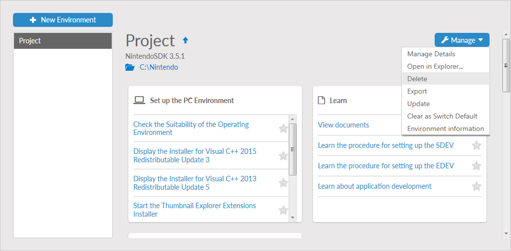

When a development environment becomes obsolete or when a project is no longer required, Nintendo Dev Interface (NDI) can delete the environment from the development system. Deleting an environment fully removes all associated files, but not any global files that are shared by other environments. A deleted environment cannot be restored.
To delete a development environment, follow these steps.
- Start NDI and select Dev Environments.
- In the list on the left, locate and select the environment to be deleted.
- Click the Manage button and select Delete from the menu.

- When a confirmation prompt is displayed, select Yes to delete the environment. NDI will remove the environment from the system.
- After the environment is deleted, if any global files are no longer required by any environments on the system, an additional prompt is displayed. Select Yes to remove these additional files or No to retain them. Retained files may be used by future environments.